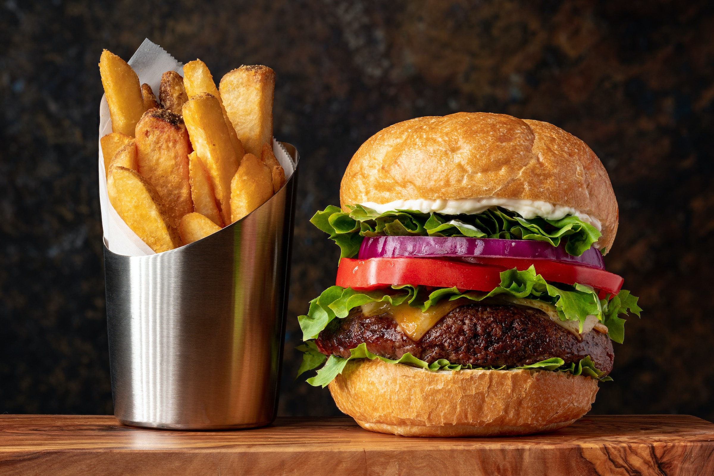

Burgers

Classic hamburger with lettuce, tomato, pickle, onion.
Another simple meal to make at home when you dont feel like cooking a full meal. Make it your way by adding veggies, cheese, bacon, or even a fried egg.
Ingredients
- 6-8oz Ground beef
- Letteuce
- Tomato
- Pickle
- Onion
- Hamburger bun
Directions
- Shape ground beef into ball and then press in to patty
- Season patty to liking and cook on medium heat until brown. Flip and cook other side until brown. Repeat until fully cooked.
- Set cooked patty on burger bun and top with desired condiments and veggies and enjoy.
Back to recipes